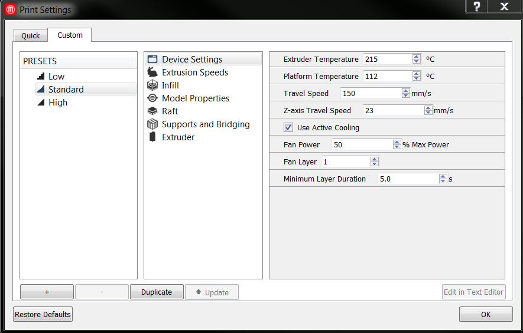
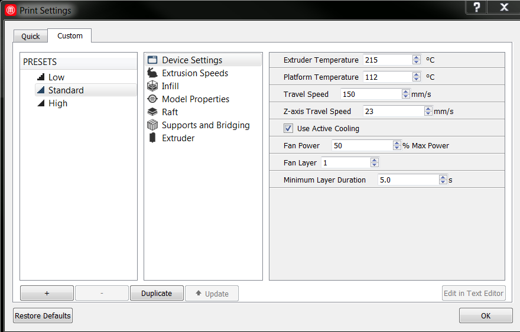
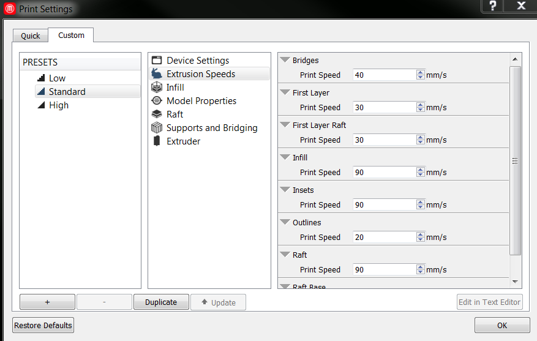
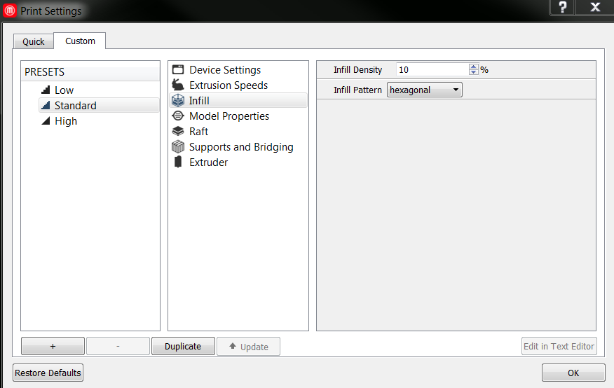
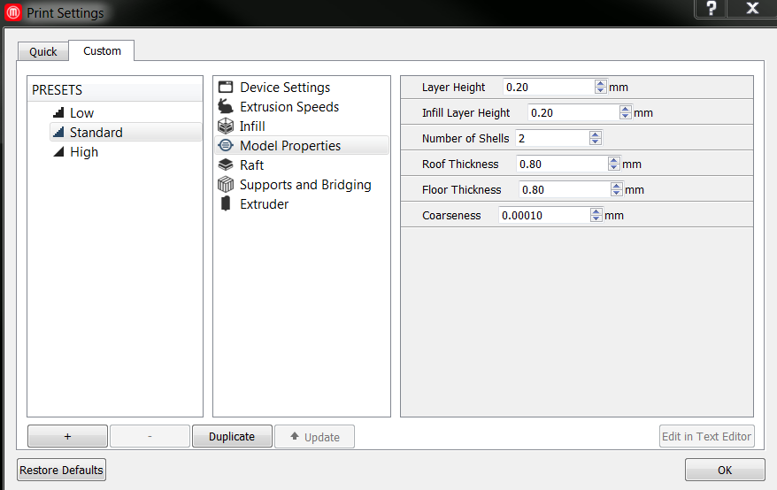
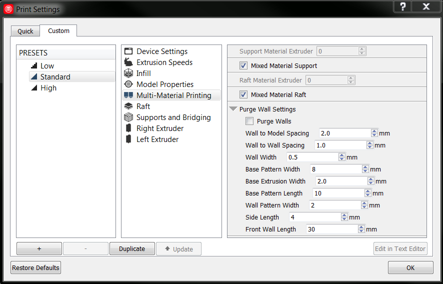
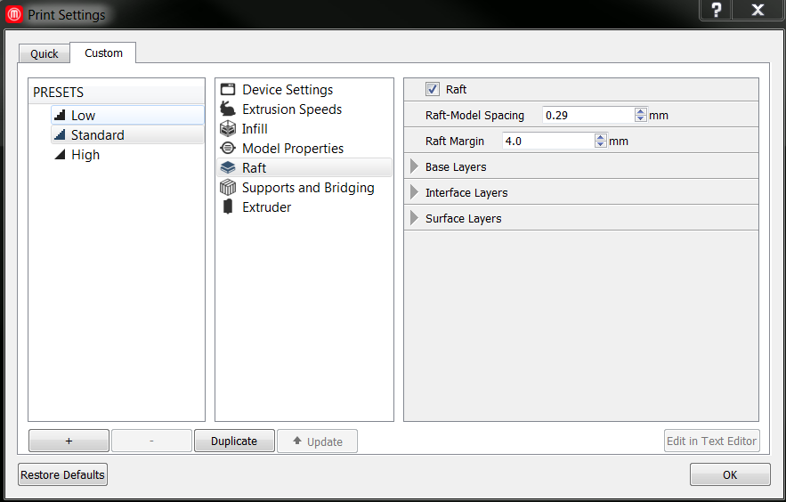
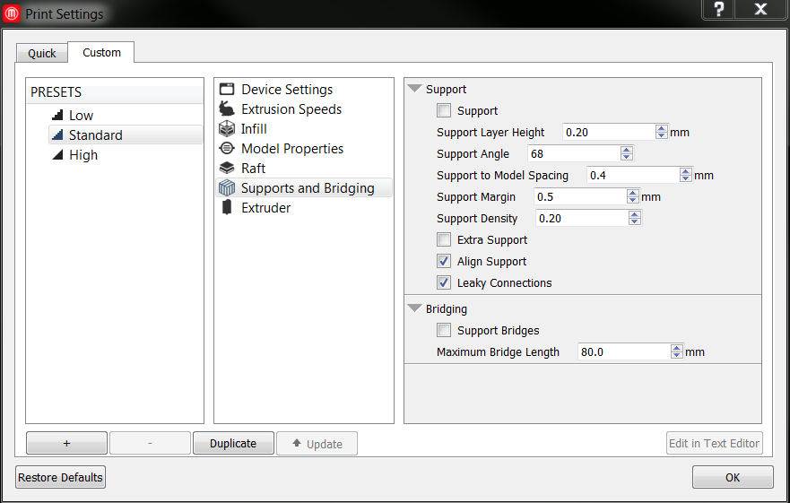
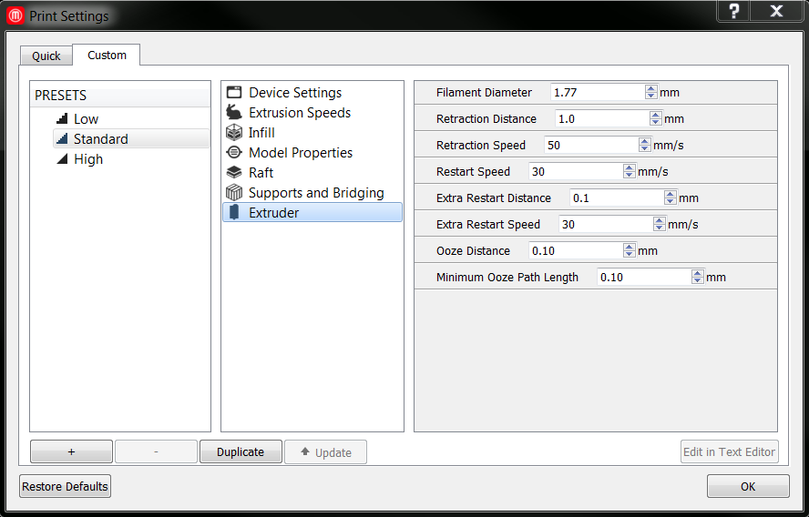

Method Firmware
Custom Settings
The Custom Settings Tab

The Custom tab is divided into three sections. On the left, you can create a new profile or choose which existing profile to modify. In the center, you can choose a category of settings to edit. On the right, you can make changes to individual settings.
Profiles
The presets column displays a list of available profiles, including MakerBot’s High, Standard and Low profiles as well as any custom profiles you’ve created in the past.
You may see an exclamation point icon next to previously created profiles. This means they need to be updated to work with the version of MakerBot Desktop you are using. Highlight the profile and click Update. Then select which MakerBot 3D printer the profile is meant to be used with, enter a description and click Apply. None of the settings in your profile will change, and you will not have to update the profile again.
Click the name of a profile to highlight it. Changes you make using the other two panes of the Custom tab will affect the highlighted profile.
Adding and Deleting Profiles
Click the + button to create a new profile. Enter a profile name and description, select what kind of material you plan to use, and which basic profile you would like to use as the basis for the new profile. Then click Create Preset. The new profile will appear at the bottom of presets column. Highlight the name of the new profile to start editing it. You can also delete a custom profile at any time by highlighting it and clicking the - button.
You can also create a new profile based on an existing one by highlighting the existing profile and clicking Duplicate.
Editing a Profile
Select a category of settings in the center pane of the Custom tab. The available settings in that category will appear in the pane on the right. Use the arrow buttons, dropdown menus and checkboxes to edit individual settings, or type new values into the text fields. Hover your cursor over any setting name for more information about that setting.
When you have made your changes, click OK at the lower right to exit the dialog. Changes will save automatically. Changes to custom profiles will be saved to that profile permanently. Changes to the basic Low, Standard and High profiles can always be reverted by clicking Restore Defaults at the lower left.
Many of the most useful slicer settings are available in the Custom tab, but if you need to change additional settings, you can edit your custom profile in a text editor. To open a profile in a text editor, click Edit in Text Editor at the lower right. This option is not available for the three basic profiles. Visit the Custom Profile page for more information.
Settings
Device Settings

Set the temperature for your extruder using the Extruder Temperature setting. If you are connected to a 3D printer with dual extruders, or if you have one selected as your device type, you will also see an Extruder Temperature 2 setting. On 3D printers with dual extruders, the right side extruder is Extruder 1 and the left side extruder is Extruder 2.
If you are connected to a 3D printer with a heated build chamber, or if you have one selected as your device type, you will see a Chamber Temperature setting, which you can use to set the temperature of the build chamber.
If you are connected to a 3D printer with a heated build plate, or if you have one selected as your device type, you will see a Platform Temperature setting, which you can use to set the temperature of the heated build plate.
Travel moves are parts of the toolpath where your 3D printer’s extruder moves without extruding any plastic. Use Travel Speed to set the extruder speed for travel moves. If you set a travel speed outside the recommended range, your setting will show up in red and a note will remind you that the setting is outside of the recommended range.
Z-axis Travel Speed sets how fast the build plate moves between layers.
If you are connected to a 3D printer equipped with an active cooling fan, you can turn it on or off by checking or unchecking Use Active Cooling. Active cooling cools down newly printed layers faster, helping to reduce warping and curling. Set the layer at which the active cooling fan turns on using the Fan Layer setting. Set the fan’s power level using the Fan Power setting.
Use Minimum Layer Duration to set a minimum print time for the individual layers of your print. Any layer that takes less than this time to print will be slowed down, giving it more time to cool before the next layer begins.
Extrusion Speeds

In the Speed section, you can edit the print speeds for different sections of your printed object. You can individually edit print speeds for the following kinds of extrusion:
-
Bridges: Sections of a print that are supported at both ends, but not in the middle.
-
First Layer: The first layer of your object when you are printing without a raft.
-
First Layer Raft: The first layer of your object when you are printing with a raft.
-
Infill: All fill areas on your print, including roof and floor layers.
-
Insets: All shells except for the outermost one on each layer.
-
Outlines: The outermost shell on each layer.
-
Raft: Extrusion on raft interface and surface layers.
-
Raft Base: Extrusion on raft base layers.
Infill

Use Infill Density to set the density of your printed object’s internal support structure. A higher percentage will result in a heavier, stronger object.
Use Infill Layer Height to set your infill to print at a different layer height than the Layer Height set in the Model Properties section. This allows you to speed up your print without sacrificing surface quality. Infill Layer Height should always be set to a multiple of Layer Height.
Select the form of your infill from the Infill Pattern dropdown.
-
Hexagonal infill is strong, so you can print sturdy objects without adding weight.
-
Linear infill is made up of parallel straight lines, perpendicular to the lines on the previous layer. Linear infill is fast to print, and makes your toolpath simpler.
-
Diamond infill is designed to be strong and to print quickly. Diamond (fast) prints even more quickly, but increases the complexity of the toolpath*.
Some infill patterns, like Catfill, Sharkfill and Moroccanstar, are just meant to be decorative and fun. These patterns may increase print times and add additional complexity to your toolpath*.
* A complex toolpath is one where the extruder makes a lot of changes in direction in a short span of time. If your 3D printer receives too many commands too quickly, it could pause or freeze during a print. To reduce the complexity of your toolpath, try decreasing the infill percentage, switching to a simpler infill pattern, or reducing the detail level of your print. For more information, see this article.
Model Properties

Use Layer Height to set the thickness of your printed object’s individual layers. A lower layer height will result in a smoother surface. An object with a higher layer height will print faster. The .4 mm nozzle on a MakerBot 3D printer may not be able to print well at layer heights higher than .35 mm.
Use Number of Shells to set the number of outlines the extruder prints on each layer before printing the infill. More shells make an object stronger and heavier and increase print times.
Select Fixed Shell Starting Point to have every outer shell begin on the same vertical line. This usually results in a visible seam down the side of a print. Use Shell Starting Point to set the angle at which the seam is located.
Roof Thickness and Floor Thickness set the height, in millimeters, of the group of solid layers at the top and bottom of your print. Use these settings to create objects without any top or bottom, or to make the floor extra thick to weight the bottom of the printed object.
Coarseness is used to simplify the outlines of each layer of your print before the toolpath is created. These outlines can include tiny details or slight changes in angle that make the toolpath complicated without making any difference to the actual printed object. You can lower the value very slightly if details in your model aren’t showing up in your print, or raise it very slightly to further simplify your object.
Multi-Material Printing

The multi-material printing section will only appear if you are connected to a MakerBot 3D printer with dual extruders or if you have one selected as your device type. These settings give you control over how your extruders are used on different parts of your print.
Use the two support material settings to choose how your support material is printed. If you want your support structures printed in a specific material, such as MakerBot Dissolvable Filament, use Support Material Extruder to select the extruder loaded with that material. Your support structures will be printed with the selected extruder and your model will be printed with the other extruder. 0 indicates the right side extruder and 1 indicates the left side extruder.
If you’re printing an object composed of two different materials, or two different colors of the same material, you may want to check Mixed Material Support instead. This will create support structures that match their material to the parts of your print they touch. When the Mixed Material Support checkbox is selected, the Support Material Extruder setting will be ignored.
If you have Support turned off, you can ignore the support settings here.
Use the two raft settings to choose how your raft is printed. If you want your raft printed in a specific material, such as MakerBot Dissolvable Filament, use Raft Material Extruder to select the extruder loaded with that material. Your raft will be printed with the selected extruder and your model will be printed with the other extruder. 0 indicates the right side extruder and 1 indicates the left side extruder.
If you’re printing an object composed of two different materials, or two different colors of the same material, you may want to check Mixed Material Raft instead. This will create a raft that matches its materials to the different parts of your print it touches. When the Mixed Material Raft checkbox is selected, the Raft Material Extruder setting will be ignored.
If you have Raft turned off, you can ignore the raft settings here.
The rest of the settings in the Multi-Material Printing section concern the purge wall, an extraneous structure that helps reduce the mixing of materials during dual extrusion prints. Use the Purge Walls checkbox to turn purge walls on and off.
Wall to Model Spacing sets the distance between the purge walls and the edges of your object. Wall to Wall Spacing sets the distance between two adjacent purge walls.
The purge wall rests on a base similar to the base layer of a raft. Base Pattern Width sets the width of the base. Base Pattern Length determines how widely spaced the lines of the base are. Base Extrusion Width sets extrusion width for the base of the purge wall.
The main section of purge wall is printed as a line of diamond shapes formed by alternating zig zags. Wall Pattern Width sets the width of the diamonds. Wall Width sets the extrusion width for the wall.
Each end of the purge wall terminates in a square tower that contains the wall’s loose ends. Use Side Length to determine the size of the square.
The length of the side wall is determined by the length of your print on the Y-axis. You can set the length of the front wall using Front Wall Length.
Raft

The raft is a printed base that keeps your object stable during the printing process. Use the Raft checkbox to turn rafts on and off. Using a raft is recommended on all 5th generation MakerBot 3D printers. For information on printing without a raft, click here.
Raft-Model Spacing sets the vertical distance between the raft and your model. A smaller space may make it difficult to remove the raft from your object, while a larger gap will decrease the quality of your object’s bottom surface. Raft Margin sets how far the raft extends beyond the edges of your object.
A standard raft consists of three sections: a thick base layer, a sparse interface layer, and two smooth surface layers. Use the settings below to edit these components separately.
Use Number of Base Layers to change the number of base layers in your raft. Change layer height and extrusion width for base layers using Base Layer Height and Base Extrusion Width.
Base Layer Density lets you change the spacing between the lines of plastic on the base layer. Base Layer Angle lets you change the orientation of the base layer pattern. The size and density of the base layer pattern are determined using the Base Pattern Length and Base Pattern Spacing settings.
Use Number of Interface Layers to change the number of interface layers in your raft. Change layer height and extrusion width for interface layers using Interface Layer Height and Interface Extrusion Width.
Interface Density lets you change the spacing between the lines of plastic on the interface layer. Interface Layer Angle lets you change the orientation of the interface layer pattern. The angle is set to 45° by default so that the thinner lines on the interface layer don’t fall between the thicker lines of the base layer.
Use Number of Surface Layers to change the number of surface layers in your raft. Change layer height for surface layers using Surface Layer Height. Change the orientation of the surface layer fill using Surface Layer Angle.
Number of Surface Layer Shells determines how many outlines are printed on each surface layer. Surface Fill-Shell Overlap sets how far the fill on surface layers overlaps those outlines. Enter a lower setting for more overlap.
Minimum Base Gap allows you to close holes that may appear in the base of your raft. Holes larger than the value set here will be filled in during printing.
Support and Bridging

Use the Support checkbox to set whether your object will be printed with automatically generated support structures. Support structures are helpful when printing models with overhangs and long bridges. If your print doesn’t have unsupported areas, you don’t need supports.
Support Angle is used to determine where your object needs support. The MakerBot Slicer will build support under overhangs that are a greater number of degrees from the vertical than the number set here.
Support to Model Spacing sets the distance between the outer edges of your object and the inner edges of the support structures. Support structures closer to your object will provide more support, but may be more difficult to remove. Support Margin sets the distance between the edges of your object and the outer edges of the support structures. If this is set to zero, support structures won’t extend farther than any supported overhangs.
Support Density allows you to change the spacing between the lines of your support structures. Denser supports will be stronger and will use more plastic.
There are also several other ways to increase the strength of your support structures. Checking Align Supports sets your support structures to print in parallel lines, but you can also uncheck the box for stiffer, criss-crossing support structures. Leaky Connections allows plastic to drip out of the extruder nozzle during travel moves, strengthening the bonds between different sections of the support structures. Checking Extra Support generates a heavier style of support that was used in earlier versions of the MakerBot Slicer. Any of these options may also make it more difficult to remove supports after a print. If Align Support or Extra Support is selected, the Breakaway Support option will be unavailable
Select Breakaway Support for support structures that will be easier to remove from the printed object. When Breakaway Support is selected, Align Support and Extra Support will be unavailable. Using Breakaway Support with the MakerBot Replicator Mini may cause surface defects and is not recommended.
A bridge is a section of a print that is supported at both ends, but not in the middle. Use the Support Bridges checkbox to print support structures under bridges as well as overhangs. If you only want supports to print under long bridges, uncheck Support Bridges and set a Maximum Bridge Length. Bridges longer than the length set here will print with support structures, and bridges shorter than this length will print unsupported.
Extruder

If your connected 3D printer or selected 3D printer type has a single extruder, you will see one extruder settings category. If it has dual extruders, you will see two categories: Right Extruder and Left Extruder. Each of these categories contains the same group of settings.
The Extruder Type dropdown is only present if you have a Fifth Generation MakerBot 3D Printer connected or selected as your device type. If you have the wrong kind of extruder set, you may see a drop in print quality. If your printer is connected to MakerBot Desktop, the software will recognize the extruder type for you. If you need to slice a file for a different extruder than you currently have connected, you can do so by editing your custom profile directly.
Filament Diameter should be set to accurately reflect the diameter of the filament you are using. If this value is too high, the extruder might not put out enough plastic during your print. If it’s too low, the extruder might put out too much plastic.
Before travel moves, the extruder retracts a short length of filament. This helps prevent thin strings of plastic forming between different sections of your print. When extrusion starts again at the end of the travel move, the filament is pushed back into the extruder nozzle. You can use the following settings to edit both retractions and restarts.
Retraction Distance is the length of filament that’s retracted before a travel move. Retraction Speed lets you set how fast that length of filament is retracted.
Restart Speed sets how fast the filament is pushed back into the nozzle after a travel move. Extra Restart Distance lets you change how much filament is pushed back into the extruder nozzle. If it is set to zero, the same amount of filament that was retracted will be put back in. However, if you see gaps or tiny blobs of plastic on your print, you can use this setting to correct that. Enter a positive value to draw in extra plastic and reduce gaps.
Plastic can continue to ooze out of the extruder at the end of a move. The MakerBot Slicer makes use of that extra plastic and reduces threading by stopping extrusion a little bit early and using the ooze to complete the move. Less plastic comes out during the ooze stage, but the extruder slows down towards the end of the move, keeping extrusion width consistent. Ooze Distance defines the amount of oozed plastic used, in millimeters of feedstock. Moves shorter than the Minimum Ooze Path Length will be completed normally, without using oozed plastic.